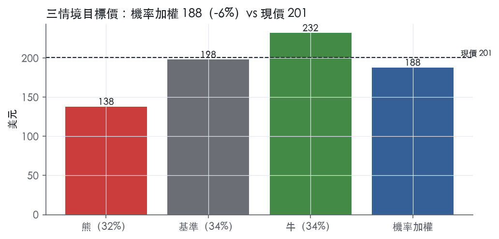
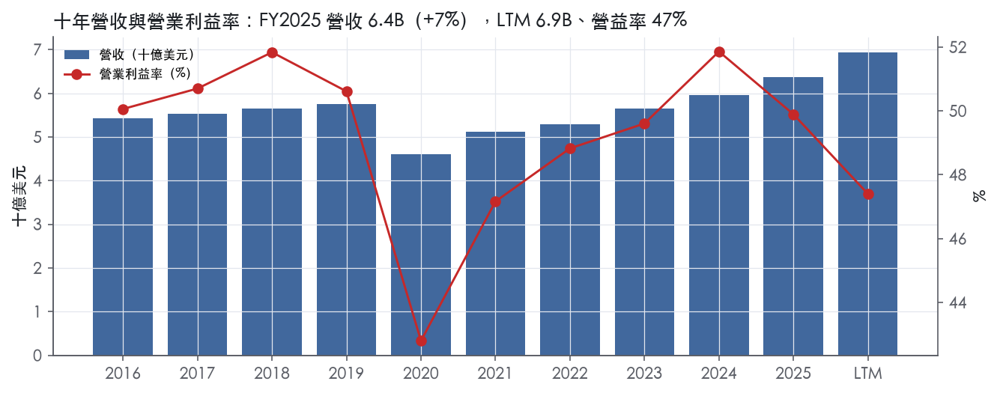
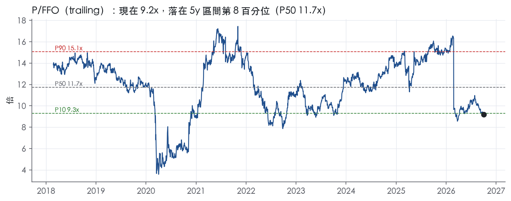
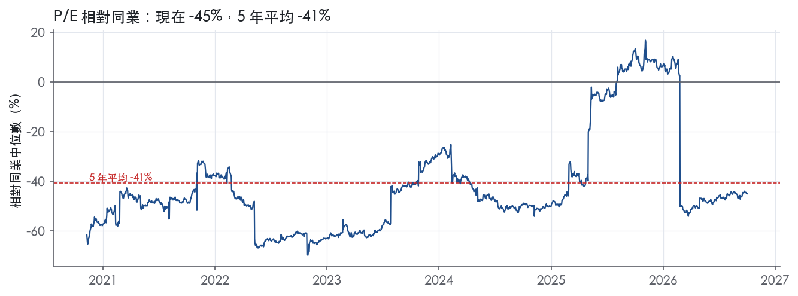
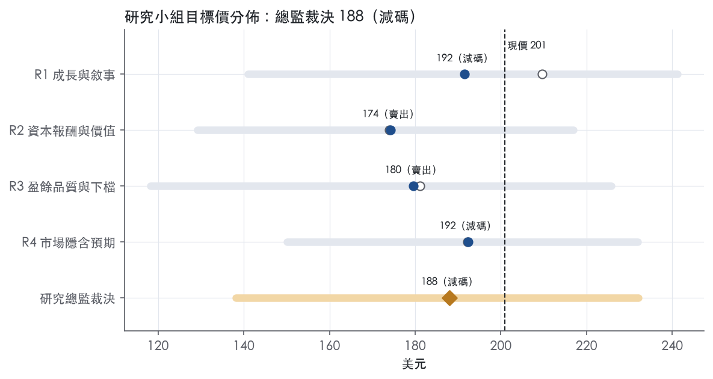
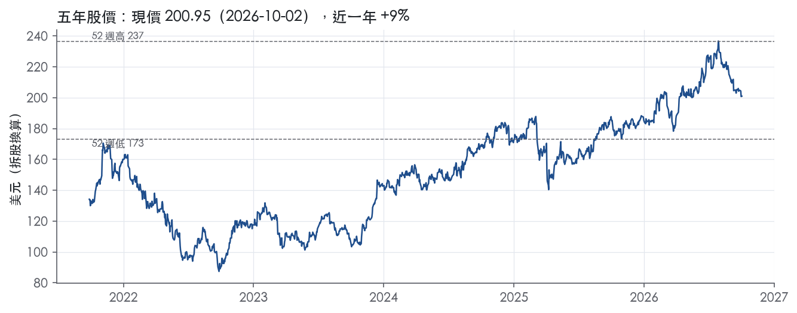

評等總表 › 不動產 › SPG
本業扎實但倍數已付足，偏空｜評等 減碼｜目標價 188
| 報告日 | 評等 | 目標價 | 當時股價 | 超額報酬 |
|---|---|---|---|---|
| 2026-10-02 | 減碼 | 188 | 201 | -12.2% |
| 評等 | 減碼（邊界，鄰近賣出） |
| 12 個月目標價 | 188 美元 |
| 現價 | 200.95 美元（2026-10-02） |
| 預期報酬 | 股價 -6.4%＋股息 4.4%＝總報酬 -2.0%；同業籃門檻 10.2%，超額 -12.2% |
| 估值方法 | P/FFO 14.0x，套在第 5–8 季的FFO（也就是一年後的未來四季） |
| 三情境 | 熊 138／基準 198／牛 232 |
| 研究流程 | 四位研究員兩輪辯論＋研究總監裁決 |
| 資料來源 | SEC EDGAR XBRL、Tiingo、FRED（全免費） |
本業扎實但倍數已付足，偏空（研究總監裁決，四位研究員兩輪辯論後）
評等 減碼（邊界，鄰近賣出）｜12 個月目標價 188 美元（總監三情境機率加權 191 與研究員中位數 186 各半）｜現價 200.95（2026-10-02）
預期報酬：股價 -6.4%＋股息 4.4%＝總報酬 -2.0%。同業籃門檻 10.2%，超額 -12.2%，離賣出的分界不到三個百分點，屬邊界評等（落在其他級距的機率約三成）。
估值方法：P/FFO 14.0x，套在第 5–8 季的FFO（也就是一年後的未來四季）。三情境：熊 138（32%）／基準 198（34%）／牛 232（34%）。
什麼會讓研究總監改變看法：FY2027 RE FFO 每股指引年增 ≥7% 且不靠新併購、或 2026Q3 基礎租金年增突破 7%，倍數回 14.9x 持平、轉中性；出租率跌破 95% 或指引下調，熊機率上調。
| 過去四季（實際，FY2026Q2） | 未來四季 | 第 5–8 季 | 第 9–12 季 | |
|---|---|---|---|---|
| 營收（B） | 6.9B | 7.6B | 8.1B | 8.4B |
| 營收成長 | 15.0% | 10.0% | 5.5% | 4.5% |
| 營業利益率 | 47.4% | 47.4% | 46.9% | 46.4% |
| 每股 FFO（美元） | 21.83 | 13.27 | 14.16 | 14.93 |
| FFO 成長 | 85.5% | -39.2% | 6.7% | 5.4% |
| 每股股息（美元） | 8.80 | 8.80 | 8.80 | 8.80 |
| EPS（美元） | 14.18 | 7.52 | 8.05 | 8.50 |
| P/FFO（現價） | 9.2x | 15.1x | 14.2x | 13.5x |
| 股息殖利率（現價） | 4.4% | 4.4% | 4.4% | 4.4% |
過去四季為申報數字；預測為研究總監的假設、程式計算。倍數與殖利率都用現價計算，用來看現價對應各期獲利的高低。
| 情境 | 機率（歷史） | 故事 | 未來四季營收成長 | 第 5–8 季營益率 | 倍數 | 目標價 | 股價漲跌 |
|---|---|---|---|---|---|---|---|
| 熊 | 32%（30%） | 風險表第 2 條（消費轉弱、坪效回落、出租率跌破 95%、重訂價停滯）疊加第 1 條（到期債以 5.36% 以上換新），FFO 成長歸零，倍數回到帶 P50 | 8.0% | 44.4% | 10.8x | 138 | -31.3% |
| 基準 | 34%（35%） | 併表紅利 2026-10-31 退場後有機成長回到中個位數，到期債以 5% 以上換新緩慢侵蝕 FFO，倍數從帶 P75–P90 之間回到 P75 略上 | 10.0% | 46.9% | 14.0x | 198 | -1.4% |
| 牛 | 34%（35%） | 坪效 13.9% 傳導到續約租金、Q3 基礎租金年增破 7%、FY2027 指引年增 ≥7%，再融資利差收斂，倍數到帶 P90 | 11.5% | 47.9% | 15.5x | 232 | 15.5% |
目標價由程式依研究總監的驅動與倍數計算；機率由研究總監給定。括號內是歷史頻率：把這檔股票過去十年 12 個月報酬的波動形狀，置中在基準情境，結果落在各情境附近的比例。

四位研究員用不同方法各自估值，回應研究總監的質疑後交出第二輪，最後由總監逐點裁決。各研究員的主張見第七章，裁決理由見第八章，完整論證見《研究底稿》。
| 立場（一輪→二輪） | 加權目標價（一輪→二輪） | 評等（一輪→二輪） | 第二輪倍數 | 熊～牛目標價 | |
|---|---|---|---|---|---|
| R1 成長與敘事 | 中性→看空 | 210→192 | 中立→減碼 | 13.7x | 141～241 |
| R2 資本報酬與價值 | 看空→看空 | 174→174 | 賣出→賣出 | 12.5x | 129～217 |
| R3 盈餘品質與下檔 | 中性→看空 | 181→180 | 賣出→賣出 | 13.5x | 118～226 |
| R4 市場隱含預期 | 看空→看空 | 192→192 | 減碼→減碼 | 14.0x | 150～232 |
| 研究總監裁決 | 看空 | 188 | 減碼 | 14.0x | 138～232 |
目標價由程式依各自的驅動與倍數計算；評等＝機率加權總報酬 − 同業籃門檻。
Simon Property Group 是一家自主管理的美國不動產投資信託（REIT），核心業務是持有、開發與管理高端購物、餐飲、娛樂與複合用途商業地產¹。截至 2025 年 12 月 31 日，公司在美國擁有或持有權益的收益型物業共 212 處，包括 108 座 Mall、70 座 Premium Outlets、16 座 The Mills、6 座生活型中心及 12 處其他零售物業，分布於 38 個州與波多黎各¹。海外則在亞洲、歐洲與加拿大持有 42 處物業權益，並持有巴黎上市公司 Klépierre 22.2% 股權，間接涉足歐洲 13 個國家的購物中心¹。本質上，SPG 的「客戶」分兩層：直接客戶是承租空間的零售商／品牌，終端客戶是進場消費的零售與體驗型消費者。作為 REIT，公司必須分配至少 90% 的應稅所得以維持免稅資格，這也決定了公司高度仰賴債務市場融資擴張與再融資¹。
SPG 不依傳統產業分部拆分財報，而是以物業類型區分產品線：Mall（區域型百貨購物中心）、Premium Outlets（折扣精品商場）、The Mills（大型綜合零售中心）及少量生活型中心與其他零售物業¹。2025 年 10 月 31 日，公司買下原持股 88% 的 The Taubman Realty Group（TRG）剩餘 12% 股權，完成全資併購，TRG 旗下高端 Mall 資產全數納入合併報表¹。除核心物業收租外，公司也透過「其他平台投資」參與零售營運（如 Catalyst Brands LLC）、電商合資（Rue Gilt Groupe，即 shop.simon.com）及全球地產投資管理公司 Jamestown¹。10-K 未按物業類型揭露各自佔營收比重，僅能從財報供應資料看整體：FY2025 營收 6.36B，較 FY2024 的 5.96B 成長 6.7%；LTM（至 FY2026Q2）營收已達 6.94B。公司投資政策明訂須維持 REIT 資格，房地產及合格資產須占總資產 75% 以上，75% 以上毛利入須來自不動產相關收入（租金、按揭利息等）¹。
主力市場是美國本土的 Mall 與 Premium Outlets 承租戶，通路即實體零售空間本身，公司在競爭論述中特別強調「實體零售的效率與即時性」作為對抗電商的核心優勢¹。海外布局集中在亞洲、歐洲（含透過 Klépierre 的歐洲 13 國曝險）與加拿大¹。公司明確表示與眾多零售通路（Mall、Outlet Center、社區型／生活型購物中心）及網路零售平台競爭，承認電商提供承租戶替代的銷售管道，可能壓縮公司議價空間¹。10-K 未揭露各地區營收占比的量化數字。經營面數據可看出需求仍穩健：截至 2026 年 6 月 30 日，美國 Mall 與 Premium Outlets 出租率為 96.0%，與去年同期持平²；每平方英尺基礎最低租金為 62.42 美元，較去年同期 58.70 美元增長 6.3%²；截至同日的過去 12 個月零售商每平方英尺銷售額為 838 美元，年增 13.9%²。這組「滿租＋量價齊升」的組合顯示公司對承租戶的議價力持續強化。
FY2025Q3（截至 2025-09-30）營收 1.60B，年增 8.2%，營益率 50.8%，淨利 0.70B。FY2025Q4（截至 2025-12-31）營收 1.79B，年增 13.2%，淨利跳升至 3.54B，主要反映 TRG 全資併購相關會計影響。FY2026Q1（截至 2026-03-31）：淨利歸屬普通股股東 479.6M，每股稀釋 1.48 美元，較去年同期 413.7M、每股 1.27 美元成長³；Real Estate FFO 為 1.208B、每股 3.17 美元，較去年同期 1.113B、每股 2.95 美元增加 7.5%³；公司當季將全年 Real Estate FFO 每股指引上調至 13.10–13.25 美元³。FY2026Q2（截至 2026-06-30）：淨利歸屬普通股股東 483.1M，每股稀釋 1.49 美元，上年同期為 556.1M、每股 1.70 美元（含每股 0.21 美元的一次性投資收益）²；Real Estate FFO 為 1.249B、每股 3.29 美元，較去年同期 1.154B、每股 3.05 美元增加 7.9%²；國內物業 NOI 單季增 8.5%，整體 portfolio NOI 增 8.3%²；公司再次上調全年 Real Estate FFO 每股指引至 13.20–13.30 美元²。上半年累計：淨利 962.7M、每股 2.97 美元，與去年同期 969.8M、每股 2.97 美元幾乎持平；Real Estate FFO 累計 2.457B、每股 6.46 美元，年增 7.5%；FFO 累計 2.293B、每股 6.03 美元²。股息面，公司連續上調配息，3Q26 普通股季配息宣告為每股 2.25 美元，年增 4.7%²。
公司 CEO Eli Simon 將成長歸因於「廣泛持續的租賃需求、客流量加速成長、零售商銷售強勁成長，以及過去一年完成併購的貢獻」²。管理層同時強調「穩健的經營表現，支撐因素包括持續的租賃動能、零售商銷售與客流增長、審慎的資本配置以及現金流成長」³。在競爭策略上，公司主張自身優勢來自物業租戶的品質、區位與多樣性、管理與營運專業、與租戶／貸款方／供應商的深厚關係、消費者導向的行銷與策略聯盟，以及實體零售的效率與即時性¹。融資策略上，公司維持 50 億美元循環信用額度與 35 億美元補充額度合計 85 億美元的流動性後盾，並積極以固定利率擔保貸款與無擔保票據置換到期債務，鎖定相對低廉的資金成本¹。整體看，SPG 的成長引擎本質是「量（出租率滿載）＋價（基礎租金與零售商銷售雙漲）＋併購整合（TRG 全資化）」三線並進，現階段驅動力以價格端的租金重訂價（repricing）貢獻最大，出租率已接近滿載難有太多邊際空間。資本市場端持續上調 FFO 指引、同步調升股息，顯示管理層對現金流可見度信心較高，但淨負債隨 TRG 併購由 22.86B 攀升至 27.61B，槓桿邊際上升值得留意。利率環境（美國十年期公債 5.24%）若持續高檔，將直接推升公司再融資成本，侵蝕 FFO 成長的部分動能。

SPG 評為窄護城河、趨勢穩定，我們有把握其優質零售地段的定價力可維持 5 年以上，但沒有足夠證據支持 10 年以上。量化底稿 ROIC 欄位全數缺值，寬護城河最關鍵的檢驗無法完成，這是評級停在「窄」的直接原因。10-K 競爭段落也承認電商（包括自家租戶）是實質替代通路，長期威脅並未消失。
SPG 的優勢來自兩類：效率規模，以及融資端的成本優勢。
效率規模。公司在美國擁有或持有權益的收益型物業共 212 處，包括 108 座 Mall、70 座 Premium Outlets、16 座 Mills，分布於 38 個州與波多黎各¹。10-K 指出，業者之間不只爭奪租戶，也爭奪「黃金地段（含開發用地與營運中物業）」的取得¹。優質區域型商場的地段有限，新進者很難在同一商圈複製一座同級物業，現有業者因此享有地區性的寡占地位。公司自述租戶的品質、區位與多樣性是吸引零售商的首要因素¹。2025 年 10 月 31 日公司收購 TRG 剩餘 12% 權益，高端 Mall 組合因此更集中在自己手上，強化了地段稀缺性這道壁壘¹。
成本優勢（資金成本）。營運合夥公司擁有 5.0B 美元無擔保循環信用額度、3.5B 美元補充額度，以及 2.0B 美元商業本票計畫¹。依目前信評，兩條信用額度的利率皆為 SOFR 加 70.0 個基點，另加 LIBOR 轉 SOFR 的利差調整¹。REIT 必須分配至少 90% 的應稅所得，資本只能靠外部融資，取得資金的成本與管道本身就是競爭武器¹。投資級信評讓 SPG 在收購優質資產與再融資時，資金成本低於規模較小的同業。
我們不列入網路效應：10-K 只提到租戶多樣性，沒有可驗證的雙邊自我強化證據。我們也不列入轉換成本與無形資產：Item 1 原文未揭露租約年限或續約率，商標也不構成定價力的證據。業務概況章引用了出租率與每平方英尺租金數據，但本章未取得該 8-K 原文，不據以評級。
利潤率的穩定度支持「有優勢」，但缺少 ROIC，無法證明「寬」。
衝突一：ROIC 無資料。ROIC 有資料的年數為 0，「ROIC 平均減資本成本」欄為空，資本成本代理值為 10.2%。寬護城河的核心證據因此不存在，我們不會在沒有數據的情況下給「寬」。
衝突二：ROE 失真，不能拿來替代 ROIC。最新 ROE 131.6%、十年平均 81.1%，反映的是 REIT 長期高配息造成的低帳面權益與高槓桿，不是經營報酬。FY2025 淨利 5.36B遠高於 FY2024 的 2.73B，主要來自 TRG 併購的會計影響，最新 ROE 被一次性項目墊高。
電商分流與利率上行是兩條主要侵蝕路徑，槓桿上升則放大這兩項風險。
窄護城河支持目標倍數相對零售 REIT 同業給予小幅溢價，理由是地段稀缺與投資級資金成本讓利潤率波動明顯較低；但溢價的維持期以 5 年為上限，終值階段應回到同業水準。目前 P/FCF 20.2x，位於五年分位 89.2%，市場已經付出可觀的溢價，估值研究員不宜在現價上再往上加碼倍數。若後續補得 ROIC 資料並確認長期高於資本成本，再重新檢討是否上修為寬護城河。
| 指標 | 最新 | 十年平均 | 標準差 | 最低 | 最高 |
|---|---|---|---|---|---|
| 營業利益率 | 49.9% | 49.3% | 2.5% | 42.8% | 51.9% |
| FCF 利潤率 | 50.3% | 51.9% | 5.5% | 40.0% | 60.8% |
| ROE | 131.6% | 81.1% | 22.5% | 45.9% | 131.6% |
程式計算。資本成本代理值（10 年債＋5%）：10.2%；ROIC 平均減資本成本：—；ROIC 有資料的 0 年中，高於資本成本 0 年。
LTM 淨利 5.36B 中絕大部分成長來自 TRG 收購產生的 2.9B 非現金重估利得（判斷依據見下），拿掉這筆一次性項目後，核心營運現金流與 FFO 成長是扎實的，但現金轉換比率（CFO/NI、FCF/NI）在計分表上轉紅，是這筆一次性 GAAP 收益把分母撐大所致，而非本業現金收不回來。真正該留意的是淨負債／EBITDA 5.57x，這是因為 TRG 收購整併了 3.1B 抵押貸款推高的槓桿，REIT 本業模式容許偏高槓桿，但這個倍數仍會壓抑可接受的估值倍數。
LTM 營業現金流／淨利 0.77x、自由現金流／淨利 0.60x，雙雙落入紅燈區，但近三年平均分別是 1.22x 與 0.97x、十年平均 1.45x 與 1.16x，顯示這不是長期趨勢惡化，而是 LTM 這一期淨利被墊高。墊高的來源是 2025 年認列的 2.9B TRG 重估利得，相當於每股 7.56 美元、且明確註明為非現金項目⁴。這筆利得進了淨利但不會產生對應現金流入，自然把 CFO/NI、FCF/NI 的分母撐大，比率因此被機械式拉低。應計比率 LTM 3.2%、近三年平均 -1.3%、十年平均 -2.9%，同樣是因為同一筆非現金利得推高了(淨利−CFO)的分子，單季波動不代表盈餘品質系統性惡化。公司自己在現金流量表中揭露，2025 年現金餘額減少 577.2M 美元至 823.1M 美元，主要用於收購與股東回饋，不是本業現金流出問題⁴。
公司用 Real Estate FFO 作為核心經營指標，定義是 FFO 扣除其他平台投資損益、處分╱交換╱重估權益的損益（稅後），以及公開交易權益工具與衍生工具公允價值的未實現損益（稅後）⁵。2Q26 GAAP 淨利為 483.1M 美元（每股 1.49 美元），而 Real Estate FFO 為 1.249B 美元（每股 3.29 美元，年增 7.9%）⁵；FFO 為 1.185B 美元（每股 3.12 美元）⁵。2025 年同期 GAAP 淨利還包含每股 0.21 美元的非現金稅後投資利得⁵。這代表公司自己都認定「處分╱重估損益」與「公允價值波動」是雜訊，要從核心指標剔除。年度層面，2025 年 EPS 從 7.26 美元跳升至 14.17 美元，公司自己拆解增量主要來自 TRG 重估的 2.9B（每股 7.56 美元）非現金利得，以及一筆 21.6M 美元的處分利得（每股 0.06 美元）⁴；相對地 2024 年 EPS 裡也含有 ABG 出售利得 414.8M 美元（每股 1.10 美元）與 JCPenney／SPARC 交易利得 100.5M 美元（每股 0.27 美元）⁴。我認為 TRG 重估利得、ABG／SPARC 處分利得都屬於真實發生但不可重複的一次性會計事件，應該從估值用的盈餘基礎中剔除；核心租金成長（NOI、FFO）才是真實成本與現金創造能力的代表。
總負債因 TRG 收購同步墊高：合併抵押貸款從 5.0B 美元增至 8.2B 美元，其中 3.1B 美元直接來自 TRG 收購整併⁴。有效綜合借款利率從 3.62% 升至 3.87%⁴，固定利率債務占比仍高（浮動利率僅占 1.1%⁴），利率風險可控。流動性充足：截至 2Q26 公司有約 9.3B 美元流動性，含 1.7B 美元現金與 7.6B 美元循環額度可用⁵。資本配置上，2025 年支付股東股利與單位分配約 3.2B 美元、資本支出 934.3M 美元、回購普通股 226.8M 美元⁴，2Q26 季度回購總投入 211.4M 美元、均價 205.10 美元⁵，稀釋股數年變動 -0.3%（LTM）顯示公司淨回購減少股數，沒有稀釋股東權益的跡象。股利與回購合計占淨利比重近三年平均僅 4.8%，遠低於 50% 門檻，黃燈主因是分母（淨利）被一次性利得撐大，不是現金回饋不足。
營業現金流／淨利 紅燈（LTM 0.77x）：真問題的外觀、假警報的本質。核心成因是 2025 年認列的 2.9B 美元 TRG 重估非現金利得墊高了分母淨利⁴，拉低比率，公司近三年平均 1.22x、十年平均 1.45x 都在健康區間，這是一次性會計口徑造成的失真，不是本業現金斷流。
自由現金流／淨利 紅燈（LTM 0.60x）：同一個成因——同一筆非現金 TRG 利得撐大分母，疊加 2025 年資本支出 934.3M 美元（含開發、再開發、租戶成本）⁴使 FCF 絕對值承壓，但近三年平均 0.97x 顯示常態下現金轉換良好，屬一次性失真。
淨負債／EBITDA 紅燈（LTM 5.57x）：這是真問題，不是假警報。槓桿墊高主要因 TRG 收購整併 3.1B 美元抵押貸款⁴，公司近三年平均 5.70x、十年平均 6.03x顯示這本來就是公司長期偏高的槓桿水位，雖然 REIT 業態普遍槓桿較高、公司維持投資級評等與 9.3B 美元流動性⁵降低了近期違約風險，但這個倍數確實限制了可以給的 EV/EBITDA 乘數上限。
淨利率 FY2019→FY2020 跳動 -14pp：一次性／外生衝擊。FY2020 營收年減 19.9%（資料包年度表），是新冠疫情下零售地產承租戶停業與租金減免所致，非會計操縱，屬總體衝擊。
淨利率 FY2020→FY2021 跳動 +22pp：疫情後營運回補的鏡像反彈，營收年增 11.1%（資料包年度表），加上基期極低，是真實復甦但基期效應放大了跳動幅度，非盈餘灌水。
淨利率 FY2024→FY2025 跳動 +39pp：已在上文詳述，主因是 2.9B 美元 TRG 重估非現金利得與較小額處分利得⁴，屬一次性、非現金、不可重複的會計事件，估值時應剔除。
估值基礎應該用 Real Estate FFO 或剔除 TRG 重估與處分╱重估損益後的核心盈餘，不要直接套用 GAAP EPS 14.17 美元去算 P/E，因為其中 7.56 美元來自不可重複的非現金重估利得。核心 FFO 年增 7.9%（2Q26 Real Estate FFO 每股 3.29 美元 vs 3.05 美元）顯示租金與入住率動能健康，不需要對核心盈餘品質打太大折扣。但淨負債／EBITDA 5.57x 的結構性高槓桿應該限制 EV/EBITDA 倍數不宜給到歷史高分位（目前已在 5 年 65.7% 分位），槓桿風險是估值上限的真實約束，而非盈餘品質問題可以解釋掉的。
| 項目 | LTM | 近三年 | 十年 | 燈號 | 規則 |
|---|---|---|---|---|---|
| 營業現金流／淨利 | 0.77x | 1.22x | 1.45x | 紅 | ≥1.00x 綠、<0.80x 紅 |
| 自由現金流／淨利 | 0.60x | 0.97x | 1.16x | 紅 | ≥0.90x 綠、<0.60x 紅 |
| 應計比率（(淨利−CFO)／平均總資產） | 3.2% | -1.3% | -2.9% | 黃 | ≤0.0% 綠、>5.0% 紅 |
| SBC／營收 | — | — | — | — | ≤3.0% 綠、>8.0% 紅 |
| 淨負債／EBITDA | 5.57x | 5.70x | 6.03x | 紅 | ≤1.50x 綠、>3.00x 紅 |
| 利息保障倍數（營業利益／利息） | 3.07x | 3.32x | 3.28x | 黃 | ≥8.00x 綠、<3.00x 紅 |
| 稀釋股數年變動 | -0.3% | -0.1% | 0.5% | 綠 | ≤0.0% 綠、>3.0% 紅 |
| （股利＋回購）／淨利 | — | 4.8% | 10.8% | 黃 | ≥50.0% 綠、<0.0% 紅 |
程式計算；燈號以 LTM（無則近三年平均）判定。
| 風險 | 觸發指標（看什麼數字、在哪裡看） | 對 EPS 的影響方向與粗略幅度 | 未來 12 個月發生機率（高／中／低） | 出處 |
|---|---|---|---|---|
| 利率上升／再融資成本提高 | 美國十年期公債殖利率、新增擔保貸款／票據的加權平均利率（財報新聞稿揭露） | 負向，中等幅度：本季 8 筆擔保貸款加權平均利率達 5.36%，歐元優先票據票面利率 3.65% | 高 | 8-K 財報新聞稿（2026-08-10） |
| 零售環境／消費需求轉弱拖累租金與出租率 | 美國 Mall/Premium Outlets 出租率、每平方英尺零售商銷售額（每季財報新聞稿） | 負向，大：出租率已達 96.0%（滿載），若零售商銷售成長（現為年增 13.9%）回落，租金重訂價動能會快速降速 | 中 | 8-K 財報新聞稿（2026-08-10） |
| 承租戶（含主力店）倒閉或破產 | 主力承租戶財報、破產申請公告、公司揭露的前幾大租戶占比 | 負向，方向明確但幅度未揭露具體百分比，10-K 僅定性描述 | 中 | 10-K 年報 FY2026 Item 1A（風險因素） |
| 債務到期牆與信評變動 | 公司揭露的未來逐年到期債務表、信評機構評等異動公告 | 負向，中：總債務已達 28.70B（FY2026Q2），後續到期若遇市場波動難以攤提 | 中 | 10-K 年報 FY2026 Item 1A（風險因素） |
| REIT 資格失效或稀釋性股權融資壓力 | 90% 應稅所得分配要求、股利宣告金額、股票回購規模 | 負向，方向明確，幅度低但一旦發生衝擊大（喪失免稅資格） | 低 | 10-K 年報 FY2026 Item 1A（風險因素） |
利率與再融資成本是目前最直接可監測、機率最高的風險。公司明確揭露以持續性債務置換到期負債，本季新增 8 筆擔保貸款交易合計約 1.4B 美元，加權平均利率 5.36%；同時發行 5 億歐元優先票據，票面利率 3.65%、期限 5 年；另完成一筆 460M 美元、5 年期定期貸款，利率為 SOFR + 0.70%，用以償還循環信用額度下同額度的借款²。10-K 也點名「利率上升會提高浮動利率債務的利息成本，且可能不利於以具吸引力條件再融資到期債務」，並承認避險安排未必能完全規避此風險。淨負債已從 FY2024 的 22.86B 攀升至 FY2025 的 27.61B（受 TRG 全資併購影響），公司目前仍握有約 9.3B 美元流動性（含 1.7B 現金與 7.6B 可用額度）作緩衝²，但若長端利率維持在目前 5.24%（美國十年期公債）附近甚至走高，後續到期債務的置換成本將系統性墊高，壓縮 FFO 成長空間。
零售環境與消費需求是第二大風險，因為公司營收結構本質是「量（出租率）＋價（租金重訂價）」雙引擎，而出租率已達 96.0%、幾無再提升空間，意味未來成長幾乎全靠租金與零售商銷售的持續上漲。10-K 列出一長串可能壓垂直業的因子，包括宏觀經濟、關稅、消費支出下滑、電商替代效應等⁶。目前零售商銷售額年增 13.9%、基礎租金年增 6.3%，處於相對強勢的週期位置，一旦這兩個數字轉弱，公司過去兩年「上調指引」的敘事會立刻逆轉，且無法靠出租率彌補。
承租戶倒閉或主力店流失是結構性但發生時點不可預測的風險。10-K 指出公司物業高度依賴百貨公司及全國性主力租戶吸引客流，一旦主力租戶關店，公司可能面臨「重新招租困難、延遲及高額費用」，且相鄰店鋪的招租也會連帶受阻⁶。公司也承認「若承租戶申請破產，公司通常無法將其驅離，且可收回的欠租金額可能遠低於債權全額」⁶。業務概況章未揭露前五大租戶占營收的具體百分比，故此處無法引用精確數字衡量集中度。
債務到期牆與信評風險與利率風險相關但角度不同：這裡看的是「到期結構」本身，即使利率不變，若單一年度到期量過大、同時遇到資本市場流動性緊縮，也可能被迫以不利條件再融資⁶。公司揭露「若信評遭下調（包括展望調整或僅是進入覆核），可能實質影響借款能力與條件」⁶。目前總債務已達 28.70B（FY2026Q2），需持續追蹤公司逐年到期債務表的集中度。
REIT 資格與稀釋性融資風險機率最低但衝擊最大：公司須每年分配至少 90% 的應稅所得才能維持免稅資格，若現金流不足以支應此分配，可能被迫以不利條件舉債、賤賣資產，或發行應稅股票／債券股息，增加成本或稀釋股權⁶。目前公司同時進行股票回購（本季回購 793,077 股及 237,618 個有限合夥單位，均價 205.10 美元，總投入 211.4M 美元）與股利連續上調（3Q26 普通股季配息 2.25 美元，年增 4.7%）²，顯示現金流尚屬寬裕，此風險短期發生機率低。
TRG 併購後的整合與會計雜訊：FY2025Q4 淨利跳升至 3.54B（遠高於前幾季 0.5–0.7B 區間），主要反映 2025 年 10 月底完成 TRG 剩餘 12% 股權全資收購的會計影響，但 10-K 風險章並未單獨列出此併購的整合風險或商譽／資產重估的後續不確定性。投資人應持續比對 GAAP 淨利與 Real Estate FFO 的差異幅度，避免誤判常態盈餘水準。
買回庫藏股與資本配置排序的機會成本：公司同時執行股票回購（本季 211.4M 美元）、提高股利、並以 5%+ 的高成本舉債（擔保貸款加權利率 5.36%），10-K 未討論此資本配置組合在高利率環境下的機會成本問題。若借款成本持續高於股票殖利率，「借錢買回股票＋發股利」的資本配置邏輯值得檢視其可持續性。
現價 200.95 對應 trailing（過去四季）P/FFO 9.2x、EV/EBITDA 18.7x、股息殖利率 4.4%、P/E 14.2x。主要估值倍數 P/FFO 現在 9.2x，落在5 年區間第 8 百分位（P10／P50／P90 = 9.3x／11.7x／15.1x）。

把程式的機械基準預測放到現價下，市場付的前瞻倍數是：P/FFO（未來四季） 14.8x、P/E（未來四季） 26.0x、P/FFO（第 5–8 季） 13.2x、P/E（第 5–8 季） 22.9x。反推 DCF 顯示市價隱含未來五年營收年成長 8.8%（WACC 9.0%、終值成長 3.0%、FCF 利潤率 56.2%，SBC 不加回）。
| 倍數 | 現在 | 5 年 P10 | 5 年 P50 | 5 年 P90 | 現在分位 | 全期 P50 |
|---|---|---|---|---|---|---|
| P/E | 14.2x | 14.7x | 19.9x | 26.9x | 4.0% | 20.6x |
| EV/EBITDA | 18.7x | 15.6x | 17.9x | 20.4x | 65.7% | 17.7x |
| EV/Sales | 13.4x | 11.2x | 12.9x | 14.7x | 61.4% | 13.1x |
| P/FFO | 9.2x | 9.3x | 11.7x | 15.1x | 8.2% | 12.2x |
trailing 倍數（股價 ÷ 過去四季）；分位以每個交易日計算。
同業籃：MAC, KIM, REG, FRT, O（手動名單（playbooks/peers.yaml））。評等門檻 10.2%：同業「倍數不變下持有一年」的隱含報酬中位數（＝ FCF 殖利率 ×(1＋g)＋g，g 為 5 年營收年複合成長並夾在 −2%～8%），每家夾在 0～15%、P/E 低於 5 倍視為資料可疑而排除，中位數再限制在 10 年債到 10 年債＋5% 之間（同業原始中位數 12.2%）；排除：MAC（隱含報酬算不出來）、REG（隱含報酬算不出來）。
| 代號 | 市值 | 5 年營收 CAGR | 營益率 | P/FFO | P/E | EV/EBITDA | 淨負債／EBITDA | 隱含報酬 |
|---|---|---|---|---|---|---|---|---|
| SPG | 65.1B | 6.7% | 47.4% | 9.2x | 14.2x | 18.7x | 5.6x | 11.9% |
| MAC | 6.5B | 5.2% | — | 21.2x | — | — | — | — |
| KIM | 14.9B | 15.1% | 36.0% | 12.1x | 25.7x | — | — | 12.2% |
| REG | 13.1B | 8.9% | 72.3% | 13.6x | — | 11.5x | 3.1x | — |
| FRT | 9.2B | 8.9% | 53.6% | 10.4x | 18.5x | — | — | 13.9% |
| O | 51.2B | 28.4% | 22.6% | 12.1x | 39.3x | — | — | 10.7% |
| 同業中位數 | 8.9% | 44.8% | 12.1x | 25.7x | 11.5x | 3.1x | 10.2% |
全部 trailing，程式以各公司 SEC XBRL 與 Tiingo 行情計算；第一列為本檔。
P/E 相對同業中位數：現在 -45.0%，過去 1 年平均 -26.1%、3 年 -31.5%、5 年 -40.6%；EV/EBITDA 相對同業中位數：現在 -12.0%，過去 1 年平均 —、3 年 —、5 年 —。

事後實現前瞻倍數帶（P/FFO，2018-08-17..2025-08-15）：P10／P50／P90 = 7.0x／10.8x／15.5x。它是每個交易日的股價除以之後四季實際實現的指標；一年後，今天的第 5–8 季正是那時的未來四季，所以這條帶是 12 個月目標價的同口徑倍數。因為用的是事後實際而非當時預期，過去成長超乎預期的公司這條帶會偏低。
程式的機械基準（成長率從過去四季年增率三年收斂到 6%、利潤率持平）用 事後實現前瞻 P/FFO P50 估值得到 164（-18.6%），市場現行前瞻倍數（現價 ÷ 基準 未來四季指標）一年後持平，套在基準 第 5–8 季指標得到 227。這兩個數字只是參考點，不是本報告的目標價；研究員對這個定價的回應在第七章。
下表是每位研究員第一輪（各自獨立）與第二輪（回應研究總監的質疑後）的結果。目標價全由程式依各自的假設計算。
| 立場（一輪→二輪） | 加權目標價（一輪→二輪） | 評等（一輪→二輪） | 第二輪倍數 | 熊～牛目標價 | |
|---|---|---|---|---|---|
| R1 成長與敘事 | 中性→看空 | 210→192 | 中立→減碼 | 13.7x | 141～241 |
| R2 資本報酬與價值 | 看空→看空 | 174→174 | 賣出→賣出 | 12.5x | 129～217 |
| R3 盈餘品質與下檔 | 中性→看空 | 181→180 | 賣出→賣出 | 13.5x | 118～226 |
| R4 市場隱含預期 | 看空→看空 | 192→192 | 減碼→減碼 | 14.0x | 150～232 |
| 研究總監裁決 | 看空 | 188 | 減碼 | 14.0x | 138～232 |
目標價由程式依各自的驅動與倍數計算；評等＝機率加權總報酬 − 同業籃門檻。
分歧度：第一輪 加權目標價 174～210（區間＝現價的 18%）· 倍數 12.5～14.5x · 立場 中性×2、看空×2；第二輪 加權目標價 174～192（區間＝現價的 9%）· 倍數 12.5～14x · 立場 看空×4（方向一致）。

| 研究員 | 第二輪主張 | 堅持的理由 |
|---|---|---|
| R1 成長與敘事 | 偏空，目標倍數 13.7 倍，落在歷史倍數帶的上四分位。 | 租金年增從 5.2% 加速到 6.3%，有機成長 5.5% 不下修。 |
| R2 資本報酬與價值 | 偏空，目標倍數 12.5 倍，以十年中位數 10.8 倍加小幅溢價。 | 帳面低倍數是假訊號，因為盈餘含併購一次性利得 3.54B。 |
| R3 盈餘品質與下檔 | 偏空，目標倍數 13.5 倍，含股息總報酬已是負數。 | 新債利率 5.36% 高於綜合借款利率 3.87%，換債會侵蝕 FFO。 |
| R4 市場隱含預期 | 偏空，目標倍數 14.0 倍，略高於歷史倍數帶的上四分位。 | 市場把併表成長當常態，純商場同業 MAC 只成長 5.2%。 |
每位研究員的逐條回應與完整論證見《研究底稿》（SPG_研究底稿_2026-10-05.docx）。
| 分歧點 | R1 | R2 | R3 | R4 | 什麼資料會分出勝負 |
|---|---|---|---|---|---|
| ① NTM 營收成長 rev_growth_y1 | 10%：併表尾巴只剩 2026Q3 與 10 月 | 9%：有機 6% 加約一季半殘留 | 9% | 10% | 2026Q3、Q4 營收年增（2026-11、2027-02 新聞稿） |
| ② 滿週年後有機成長 rev_growth_y2 | 5.5%：租金 5.2%→6.3% 加速、CPI 3.71% 墊底 | 5.5%：FY2024 有機 5.4% | 4.5%：只講併表退潮 | 5.5% | FY2027 RE FFO 指引（2027-02）、2027Q1 營收年增（2027-05） |
| ③ 營益率與 D&A op_margin_y2 | 46.5%＋D&A 25.5%，FFO 中性再靠營運槓桿擴張 | 沿用基準 47.4% | 46.9%／46.4%：每年 0.5pp 利息代理 | 46.0%＋D&A 25.0% | 2026Q3 起利息費用列、FY2026 10-K 綜合借款利率 |
| ④ 目標倍數 | 13.7x（帶 P75） | 12.5x（P50 加窄護城河溢價） | 13.5x | 14.0x（略高於 P75） | FY2027 RE FFO 每股指引年增：≥7% 倍數持平，<5% 收縮 |
| ⑤ 熊情境深度與機率 | −28%、32%、10.8x | −27%、32%、10.0x | −36%、27%、10.0x | −24%、36%、11.5x | 2026Q3 出租率與指引（2026-11）、補充資料第 28 頁到期表 |
①：選 R1 的 10%。 TRG 於 2025-10-31 全資併表¹；FY2026Q1、Q2 營收年增 19.3%、19.5%是整季併表的尺，FY2025Q4 只含兩個月就有 13.2%。NTM 內 2026Q3 整季、Q4 一個月仍有墊高，之後是有機。R1、R2 認定的季數相同，差在幅度：R2 留給 Q3 的殘留偏低，有機 6% 也低於併表前 FY2025Q3 的 8.2%。基準 12% 把併表效果多算一季以上，四位都否決，我同意。
②：選 R1 的 5.5%。 證據在價不在量：出租率 96.0% 滿載，但基礎租金年增 6.3%、坪效年增 13.9%²，R1 引 8-K 2026-05-11 的 Q1 租金年增 5.2% 顯示在加速，租金占銷售比重下降給了重訂價空間；併表前 FY2023、FY2024 成長 6.9%、5.4%在同一區間。R3 的 4.5% 只重複「併表退潮」這個共用前提，沒有租金減速的個別證據。y3 取 4.5%（假設），向十年平均 2.2%（護城河章引量化底稿）回歸，不影響 Q5–Q8 目標價。
③：選 R3 的利息代理。 模型利息按 LTM 持平（模型限制），但 2026Q2 新增擔保貸款加權利率 5.36%²對 FY2025 綜合借款利率 3.87%⁴，到期債換新逐年侵蝕 FFO；營益率是模型裡唯一能讓它進入 FFO 的槓桿，R3 明示這是代理、不是主張營運利潤率下滑。R1 以 NOI 成長 8.5%²高於租金年增主張營運槓桿，但該數字含併表貢獻，拆不出同店槓桿，且他的營益率下修、D&A 上修是 FFO 中性拆法，沒處理利息。R4 在 FFO 口徑與 R3 幾乎相同。R2 沿用基準等於假設再融資零成本，與他自引的 3.62%→3.87% 矛盾。D&A 維持 24.2%：購買價格分攤推高的 D&A 在 FFO 會加回，拆法不影響主尺，代價是 P/E 交叉驗證偏高，我們以 P/FFO 為準。
④：選 R4 的 14.0x。 四位都錨在事後實現前瞻帶（P50／P75／P90＝10.8x／13.7x／15.5x，估值劇本），分歧在位置。略高於 P75：帶在成長期系統性偏低（劇本註明），公司正處於指引兩度上調至 13.20–13.30、股息年增 4.7%²的成長期；市場現在對基準 NTM FFO 付 14.8x（基準估值），落在 P75–P90 之間，表示市場已修正這個偏低。低於持平 14.9x 的理由是個股的：CEO 把 RE FFO 每股年增 7.9% 的來源明列「過去一年完成併購的貢獻」²，這部分在 2026-10-31 滿週年後消失；加上 ③ 的侵蝕、淨負債 27.68B與淨負債／EBITDA 5.57x（財務體質章），市場一年後付得略少是合理的。R2 的 12.5x 低於零報酬倍數 13.2x（基準估值）、相對持平 −16%（程式檢查表），等於主張一年內 16% 的個股降評，但他倚賴的 P/FCF 五年 89.2% 分位、EV/EBITDA 65.7% 分位被 TRG 汙染——R3 已指出 EV 含 TRG 全額抵押貸款 3.1B⁴而 LTM EBITDA 只含部分期間——撐不起 P50 附近。R1 把「10 年債 5.24% 高於帶期間多數時候」列為不取 P75 以上的理由，這條退回：現價與門檻已反映利率，除非主張利率一年內再升並寫出路徑。同業：P/E 折價 −45.0% 用的是含 TRG 利得的 EPS，EV/EBITDA 只有 REG 一家可比（同業表），假設相對同業折價維持現狀，不另加溢折價。
⑤：own——機制取 R3，深度取 R1。 熊須對應風險表：第 2 條（消費轉弱、重訂價停滯）疊加第 1 條（到期債以 5.36% 以上換新），是 R3 的寫法。但 R3 的 y2 營收 0%、營益率 43.4%、10.0x 是重訂價完全停擺的版本，深於風險表對第 2 條標的「中」機率，留作尾端；R1 指出帶 P25 以下主要是 2020 年低點起點、熊是降溫不是封城，倍數取 P50 10.8x，我接受。R4 的 11.5x 對 FFO 成長歸零、槓桿 5.5x 的商場 REIT 偏寬。
退回的漂移。 R1 加權目標價向中位數靠攏 63%，主要來自接受 G1（錨由記憶區間改為帶 P75，證據在材料裡）與 G2，不退回。退回的是他把牛機率 30%→28%：程式對照的歷史頻率是 31%，他的理由「不讓成長進到分子與機率兩處」是自訂規則不是證據，方向正是本部 22 份報告的熊偏誤；裁決時以第一輪 30% 看待。R2、R4 未漂移，R3 反向移動，均不退回。
| 驅動 | 基準 | 裁決 | 理由 |
|---|---|---|---|
| rev_growth_y1 | 12.0% | 10.0%（假設） | ①：併表效果只剩 2026Q3 整季與 Q4 一個月 |
| rev_growth_y2 | 9.0% | 5.5%（假設） | ②：租金 6.3%、坪效 13.9% 支撐中個位數 |
| rev_growth_y3 | 6.0% | 4.5%（假設） | 向十年均值回歸一檔 |
| op_margin_y2／y3 | 47.4%／47.4% | 46.9%／46.4%（假設） | ③：每年 0.5pp 再融資利息代理 |
| da_pct_rev、capex、稅率、股數 | 24.2%、13.0%、5.0%、−0.8% | 不變 | D&A 拆法對 FFO 中性；2Q26 回購 211.4M²支持股數續減 |
目標倍數 14.0x P/FFO，套在 Q5–Q8 FFO（第 5–8 季），與事後實現前瞻帶同口徑、不需換算。錨：帶 P75 13.7x 略上、低於市場持平 14.9x（理由見 ④）；相對同業不加溢折價。交叉驗證：股息率 4.4%（快照）加股息年增 4.7% 支持帶上半部的倍數；程式的 EV/EBITDA、P/E 交叉驗證受 TRG 汙染，不據以調整。
歷史基準率：相對中位數 ≥+10% 的比例 32%、≥+20% 21%；≤−10% 39%、≤−20% 24%、≤−30% 12%。我的牛倍數上限是帶 P90 15.5x，距基準 14.0x 明顯小於熊的 P50 10.8x；程式對 R4（牛 +17%／熊 −24%）給的歷史對照 35／29／36、對 R1（+22%／−28%）給 31／37／32，我的距離介於兩者，歷史頻率牛熊相當。本部 22 份報告全部熊高於牛，SPG 的歷史分布不支持，我不延續：牛 34%、基準 34%、熊 32%，都在歷史頻率數個百分點內，不需公司特有證據辯護偏離。
差距在倍數，不在盈餘。市場現在對基準 NTM FFO 付 14.8x（基準估值），公司指引兩度上調至 13.20–13.30²，看不出市場對一年內 FFO 有過度預期；R4 引的反推 DCF「市場隱含 5 年營收成長 8.8%」是程式以 FCF 利潤率構造的數字，REIT 投資人看的是 FFO 每股——營收年增 19.5% 對上 RE FFO 每股年增 7.9%²，正說明併表膨脹的是營收不是 FFO，市場沒有被營收成長騙。真正的差異是併購貢獻滿週年後 FFO 每股成長降檔、再融資侵蝕，市場一年後付的倍數會小幅回到 14.0x。立場偏空與評等一致，但評等主因是不對稱：牛情境被帶 P90 壓住，熊情境到 P50 的距離大得多，32% 的熊機率把加權總報酬拉到門檻 10.2% 之下，股息率 4.4% 補不了這個缺口。
現價 200.95 → 點估目標價 198 → 機率加權目標價 191 → 目標價 188，差距拆成五段：成長順延 +26 美元（市場現行倍數 14.9x 一年後持平、獲利照機械基準）；倍數差 -14 美元（總監倍數 14.0x vs 市場持平倍數 14.9x，同一機械基準預測）；盈餘差 -14 美元（總監預測的第 5–8 季FFO 4.5B vs 機械基準 4.8B，同一倍數）；情境不對稱 -8 美元（機率加權減點估）；研究小組平均 -2 美元（總監機率加權 191 與研究員第二輪中位數 186 各半）。各段相加等於目標價減現價。本階段未接賣方共識，差距以市場隱含預期為對照。
| 驅動 | 機械基準 | 研究總監 | 差異 |
|---|---|---|---|
| 未來四季營收成長 | 12.0% | 10.0% | -2.0 pp |
| 第 5–8 季營收成長 | 9.0% | 5.5% | -3.5 pp |
| 第 9–12 季營收成長 | 6.0% | 4.5% | -1.5 pp |
| 未來四季營益率 | 47.4% | 47.4% | ＝ |
| 第 5–8 季營益率 | 47.4% | 46.9% | -0.5 pp |
| 第 9–12 季營益率 | 47.4% | 46.4% | -1.0 pp |
| D&A／營收 | 24.2% | 24.2% | ＝ |
| 資本支出／營收 | 13.0% | 13.0% | ＝ |
| SBC／營收 | 0.0% | 0.0% | ＝ |
| 稅率 | 5.0% | 5.0% | ＝ |
| 股數年變動 | -0.8% | -0.8% | ＝ |
研究總監只寫偏移，未寫的沿用基準。
| 期 | 營收 | 成長 | 營益率 | EBITDA | 淨利 | EPS | FFO | 每股 FFO | 每股股息 | 期末淨負債 |
|---|---|---|---|---|---|---|---|---|---|---|
| 未來四季 | 7.6B | 10.0% | 47.4% | 5.5B | 2.4B | 7.52 | 4.3B | 13.27 | 8.80 | 24.4B |
| 第 5–8 季 | 8.1B | 5.5% | 46.9% | 5.7B | 2.6B | 8.05 | 4.5B | 14.16 | 8.80 | 20.9B |
| 第 9–12 季 | 8.4B | 4.5% | 46.4% | 5.9B | 2.7B | 8.50 | 4.7B | 14.93 | 8.80 | 17.3B |
程式依上表的驅動計算；季度用最近四季季節性分攤；不含營運資金變動。
估值方法：P/FFO 14.0x，套在第 5–8 季的FFO（也就是一年後的未來四季）。研究總監目標倍數的錨：事後實現前瞻 P/FFO 帶 P75 13.7x 略上（帶在成長期偏低、市場已對基準 NTM FFO 付 14.8x）；低於市場持平 14.9x 因併購貢獻滿週年後 FFO 每股成長降檔、再融資侵蝕與槓桿 5.57x；相對同業折價假設不變。
計算：FFO（第 5–8 季） 4.5B × 14.0x＝權益價值 63.3B，除以第 5–8 季的股數 → 點估目標價 198（-1.4%）；隱含 P/E（未來四季）26.3x、P/E（第 5–8 季）24.6x、EV/EBITDA（第 5–8 季）15.3x、FCF 殖利率（第 5–8 季）5.5%。
總監三情境機率加權目標價 191，研究員第二輪中位數 186，兩者各半＝目標價 188；預期報酬 股價 -6.4%＋股息 4.4%＝總報酬 -2.0%；減評等門檻 10.2%（同業籃隱含報酬中位數（MAC, KIM, REG, FRT, O））＝超額報酬 -12.2% → 評等 減碼（超額 >+15% 買進、+5～+15% 加碼、±5% 中立、−5～−15% 減碼、<−15% 賣出）。同一份資料重開研究小組，超額約有正負四個百分點的雜訊（一個標準差，二十檔實測）；以此估計，評等落在其他級距的機率約三成。超額離賣出的分界不到三個百分點，應視為邊界評等。
| 情境 | 機率 | 未來四季成長 | 第 5–8 季成長 | 第 5–8 季營益率 | FFO（第 5–8 季） | 倍數 | 目標價 |
|---|---|---|---|---|---|---|---|
| 熊 | 32% | 8.0% | 2.5% | 44.4% | 4.1B | 10.8x | 138 |
| 基準 | 34% | 10.0% | 5.5% | 46.9% | 4.5B | 14.0x | 198 |
| 牛 | 34% | 11.5% | 7.5% | 47.9% | 4.8B | 15.5x | 232 |
| 主張 | 驗證日 | 看哪個數字 | 門檻 |
|---|---|---|---|
| 併購貢獻滿週年後 FFO 每股成長降檔 | 2027-02-28 | FY2027 Real Estate FFO 每股指引中值相對 FY2026 實際值的年增率 | < 7% |
| 併表效果退場，季營收年增回到個位數 | 2027-05-15 | FY2027Q1 營收年增率 | < 8% |
| 再融資侵蝕是真的：綜合借款利率上升 | 2027-02-28 | FY2026 10-K Item 7 有效綜合借款利率 | >= 4.0%（門檻為假設） |
| 基準情境下風險表第 2 條未觸發 | 2027-02-15 | 2026-12-31 美國 Mall 與 Premium Outlets 出租率；FY2026 Real Estate FFO 每股 | 出租率 >= 95.5%（假設）且 RE FFO >= 13.20 |
到期由程式結算（第 5 階段帳本）。
內文上標數字對應下列公司申報文件；未標上標的分析與判斷，是研究小組的觀點。報告中的每個數字都經程式逐一核對資料包或原文。
| 期 | 營收 | 成長 | 毛利率 | 營益率 | FFO | 淨利 | EPS | CFO | FCF | ROIC | 淨負債 | 稀釋股數 |
|---|---|---|---|---|---|---|---|---|---|---|---|---|
| FY2016 | 5.4B | — | — | 50.1% | 3.4B | 2.1B | — | 3.4B | 2.6B | — | 22.4B | 0.3B |
| FY2017 | 5.5B | 1.7% | — | 50.7% | 3.5B | 2.2B | — | 3.6B | 2.9B | — | 23.2B | 0.3B |
| FY2018 | 5.6B | 2.1% | — | 51.8% | 4.1B | 2.8B | — | 3.8B | 3.0B | — | 22.8B | 0.3B |
| FY2019 | 5.8B | 1.9% | — | 50.6% | 3.8B | 2.4B | — | 3.8B | 2.9B | — | 23.5B | 0.3B |
| FY2020 | 4.6B | -19.9% | — | 42.8% | 2.6B | 1.3B | — | 2.3B | 1.8B | — | 25.7B | 0.3B |
| FY2021 | 5.1B | 11.1% | — | 47.2% | 3.8B | 2.6B | 6.84 | 3.6B | 3.1B | — | 24.8B | 0.3B |
| FY2022 | 5.3B | 3.4% | — | 48.8% | 3.7B | 2.5B | 6.52 | 3.8B | 3.1B | — | 24.3B | 0.3B |
| FY2023 | 5.7B | 6.9% | — | 49.6% | 3.9B | 2.6B | 6.98 | 3.9B | 3.1B | — | 23.9B | 0.3B |
| FY2024 | 6.0B | 5.4% | — | 51.9% | 4.0B | 2.7B | 7.26 | 3.8B | 3.1B | — | 22.9B | 0.3B |
| FY2025 | 6.4B | 6.7% | — | 49.9% | 6.8B | 5.4B | 14.17 | 4.1B | 3.2B | — | 27.6B | 0.3B |
SEC XBRL；每股數據已依拆股換算到現在股數基準。EBITDA 空白 = 該年無形攤銷在 companyfacts 中缺 tag。
| 期 | 期末 | 推導 | 營收 | 毛利率 | 營益率 | FFO | 淨利 | EPS | CFO | FCF | 現金 | 總債務 |
|---|---|---|---|---|---|---|---|---|---|---|---|---|
| FY2023Q3 | 2023-09-30 | 1.4B | — | 49.2% | 1.0B | 0.7B | 1.82 | 0.9B | 0.7B | 0.8B | 24.9B | |
| FY2023Q4 | 2023-12-31 | 1.5B | — | 51.9% | 1.2B | 0.9B | 2.29 | 1.0B | 0.9B | 1.2B | 26.0B | |
| FY2024Q1 | 2024-03-31 | 1.4B | — | 51.0% | 1.1B | 0.8B | 2.25 | 0.8B | 0.6B | 1.3B | 25.5B | |
| FY2024Q2 | 2024-06-30 | 1.5B | — | 51.7% | 0.9B | 0.6B | 1.51 | 1.1B | 0.9B | 1.2B | 25.3B | |
| FY2024Q3 | 2024-09-30 | 1.5B | — | 51.9% | 0.9B | 0.5B | 1.46 | 0.9B | 0.7B | 2.2B | 25.4B | |
| FY2024Q4 | 2024-12-31 | 1.6B | — | 52.8% | 1.2B | 0.8B | 2.04 | 1.1B | 0.9B | 1.4B | 24.3B | |
| FY2025Q1 | 2025-03-31 | 1.5B | — | 49.4% | 0.8B | 0.5B | 1.27 | 0.8B | 0.6B | 1.4B | 24.8B | |
| FY2025Q2 | 2025-06-30 | 1.5B | — | 49.7% | 1.0B | 0.6B | 1.70 | 1.2B | 1.0B | 1.2B | 25.4B | |
| FY2025Q3 | 2025-09-30 | 1.6B | — | 50.8% | 1.0B | 0.7B | 1.86 | 0.9B | 0.7B | 1.6B | 25.8B | |
| FY2025Q4 | 2025-12-31 | 1.8B | — | 49.7% | 4.0B | 3.5B | 9.35 | 1.2B | 0.9B | 0.8B | 28.4B | |
| FY2026Q1 | 2026-03-31 | 1.8B | — | 43.4% | 1.0B | 0.6B | 1.48 | 0.8B | 0.6B | 0.5B | 28.2B | |
| FY2026Q2 | 2026-06-30 | 1.8B | — | 46.0% | 1.0B | 0.6B | 1.49 | 1.2B | 1.0B | 1.0B | 28.7B |
流量項目由 10-Q 的年初至今數拆成單季；Q4 = 年度 − 九個月。

本報告由 equity-desk 多代理系統產出，建置中版本，僅供內部研究與方法驗證，不構成投資建議。所有數字以 datapack.json 為準。